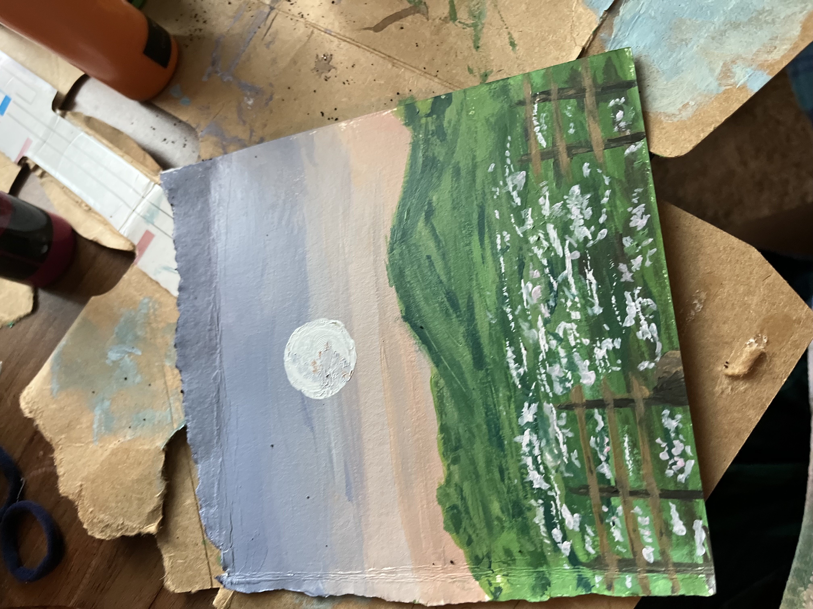
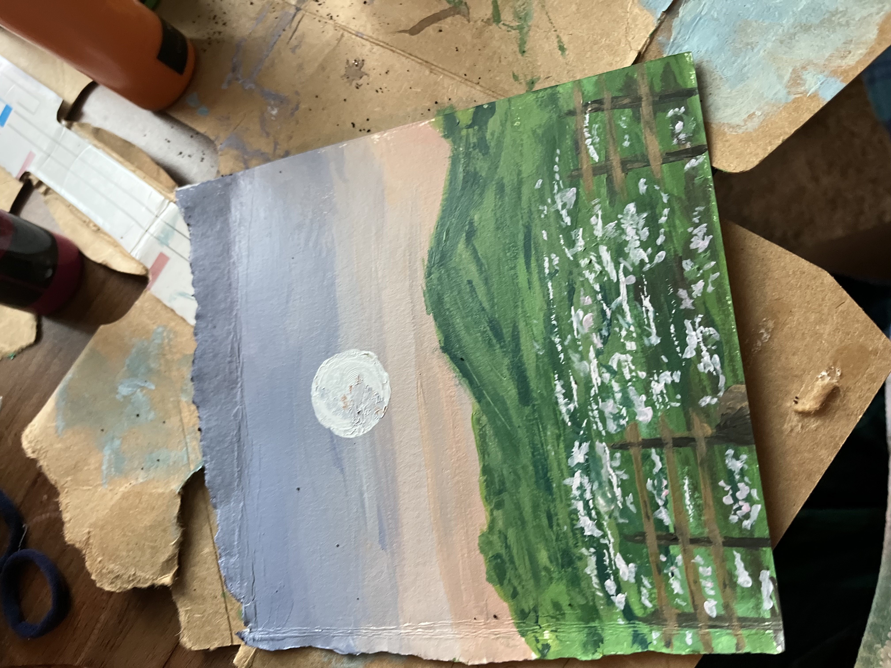

Music
| Title | Author | Description |
|---|---|---|
| Romance | Claude Debussy | This song is whimsical and delicate. The lyrics are loving and sung to a lover. |
| L'ho Perduta | Wolfgang Amadeus Mozart | From the opera Le Nozze di Figaro the song is sung by the young Barbarina, who has lost a pin, a pin she was instructed to give to her cousin by the Count. |
In 2021, I sang Romance by Debussy for an opera audition and L'ho perduta from Le Nozze di Figaro for vocal juries. Both pieces demanded a high level of vocal control and emotional expression, showcasing vastly different styles and contexts. Singing Romance required delicate phrasing and a nuanced interpretation of the French lyrics, as I sought to convey the emotional depth of the character. In contrast, L'ho perduta called for a dramatic delivery, as I embodied the Count's despair in his search for his lost bride. These performances challenged me as a vocalist, pushing me to new heights of musical expression and storytelling.
For eight years of my life, I devoted myself to music. It was my passion and my escape. I poured my heart and soul into learning, practicing, and creating. Looking back on those years, I am filled with a sense of nostalgia and pride.
I cherish the memories of performing in front of crowds, of collaborating with other musicians, and of exploring new sounds and styles. I am grateful for the discipline and focus that music instilled in me and for the beautiful music I sang.
Throughout my musical journey, I faced various challenges that hindered my growth as an artist. Unfortunately, some of these challenges included harassment and bullying.
Though I no longer pursue music as a career, it will always hold a special place in my heart. The skills and experiences that I gained through my musical journey continue to shape who I am today, and I will always be grateful for the time that I spent devoted to this art form.
Art
When I paint scenes in nature, I feel a sense of calm and connection to the world around me. I'm drawn to the way light and shadow interact with each other, and how they reveal the beauty in even the most mundane things. Painting landscapes and seascapes is a way for me to express myself without the fear of failure - I don't believe there's such a thing as a "wrong" way to paint nature. I learned how to paint from my great aunt, who was an accomplished artist and taught me to appreciate the world's beauty and the power of self-expression.
 

After my departure from music, I found solace in art as it provided a different means of creative expression.
While I missed the emotional connection of music, art introduced me to new techniques, styles, and ideas that allowed me to explore and discover different aspects of my personality.
I became fascinated with the possibilities of different mediums and methods, from traditional drawing and painting to digital art, and began to hone my skills. It was a challenging but rewarding journey that taught me the value of adaptability and persistence in pursuing one's passions.
Code
My fascination with technology began at a young age, and I learned how to repair laptops and other devices because I couldn't afford to replace them. Although I initially pursued music as a career, I realized that my natural talent lay in technology. I became engrossed in coding and software engineering, driven by my curiosity about how technology works and its potential. Programming gave me a new outlet for problem-solving and creativity. As an avid gamer, I relish using technology to create games and other programs.
I recently created the game below using JavaScript, which was a fun!
Rock Paper Scissors Game
Discovering coding was a turning point in my life, as I found myself drawn to its logical and problem-solving nature.
As I delved deeper into this new world, I discovered a proficiency for it that I had never felt before. The satisfaction of seeing a program come to life or a bug finally fixed was unparalleled.
I spent countless hours coding, learning new languages, and building personal projects. It was then that I knew this was what I wanted to be doing, and I couldn't wait to see where it would take me.
It opened up new opportunities for me and gave me a sense of purpose that I had never felt before.